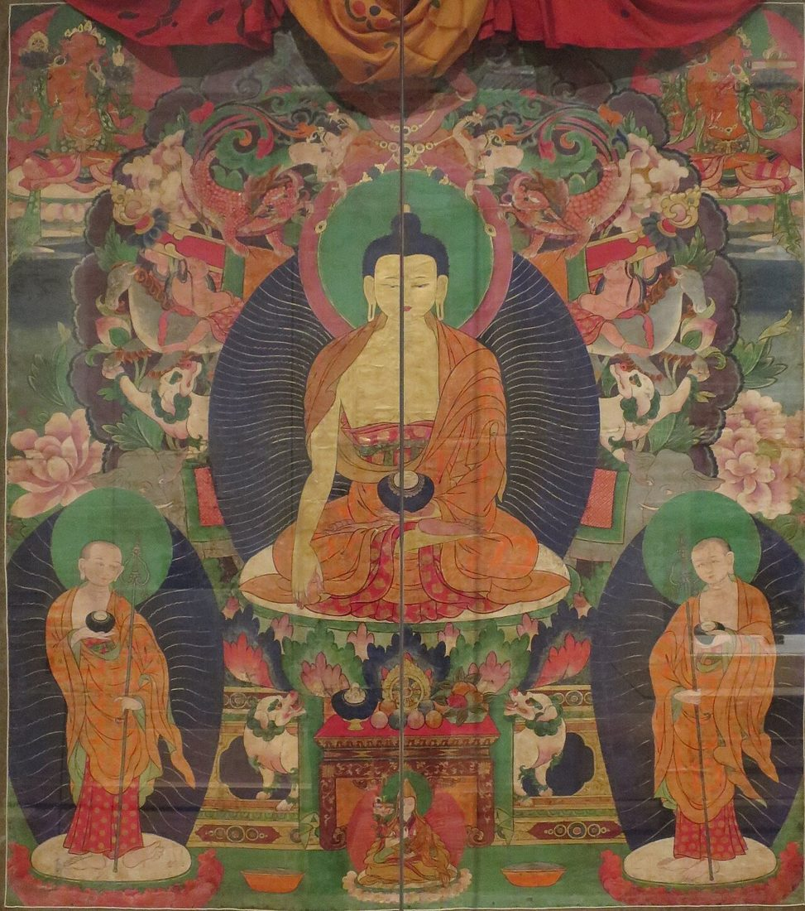

Services
Himalayan Brushwork offers free educational resources for people who want to understand and enjoy Himalayan thangka art. Here is what we provide.

In-Depth Guides
Long-form articles on the making, meaning, and care of thangkas, written to be useful whether you are a first-time buyer or a long-time collector.
Care and Display Advice
Practical guidance on hanging, lighting, humidity, storage, and framing, so a painting stays bright and sound for decades.
Iconography Explained
Clear explanations of the symbols, colors, and figures you will see in mandalas, deity paintings, and narrative thangkas.
Materials and Technique Notes
Explanations of how a thangka canvas is prepared, how textile thangkas are stitched, and what these details tell a careful buyer.
Reader Questions
Have a question about a thangka you own or are thinking of buying? Send it through our contact page. We read every message and use common questions to shape future guides.